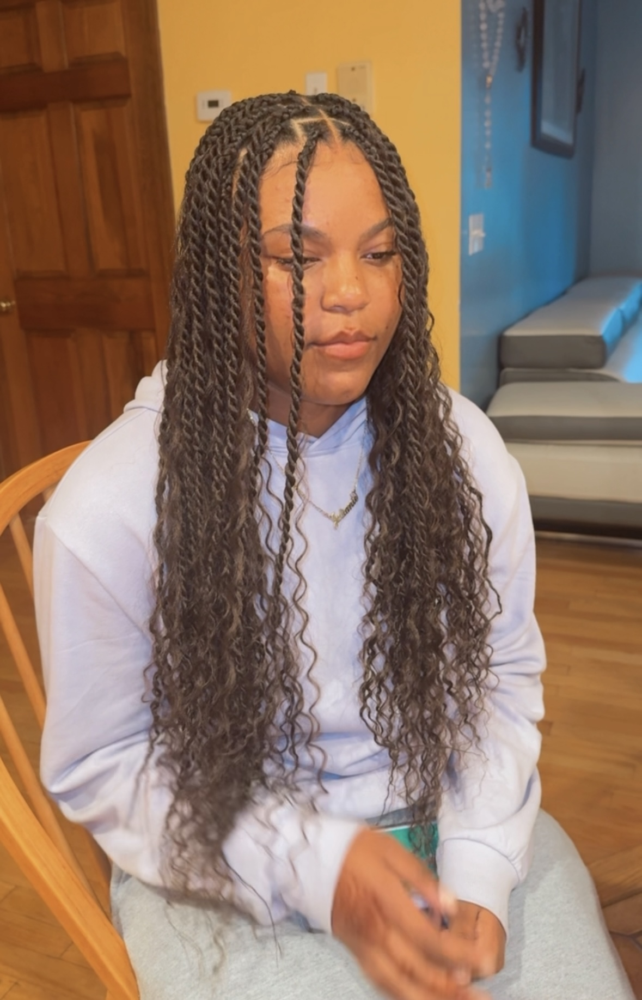

Twists
Twists are a type of protective hairstyle where two strands of hair, either natural or with added extensions, are twisted around each other to form rope-like sections. They are a versatile and low-maintenance style that helps protect the natural hair from environmental stress and breakage. Twists can vary in size, length, and texture, depending on the desired look and the type of hair used.
Here are some key features of twists:
-
Versatility: Here are some options I offer for twists styles
- Two-strand Twists:This is the most common form, where two sections of hair are twisted together. The style can be done on natural hair or with added extensions.
- Senegalese Twists:These are typically done with synthetic extensions, giving a sleek, smooth finish to the twists.
- Marley Twists:Made with Marley hair extensions, these twists have a more textured, natural look, resembling the texture of kinky or coily hair.
- Island Twists:These twists are done with the addition of curly hair extensions. They draw inspiration from island life, making it ideal for someone who wants a carefree, bohemian, or beachy look.
- Passion Twists:These twists are done with the addition of hair extensions that have a bouncy and silky look.
- Low Tension: Twists generally exert less tension on the scalp than tighter braided styles, making them comfortable and less likely to cause hair damage or breakage.
- Natural or with Extensions: Twists can be created with just natural hair or by adding hair extensions to achieve longer lengths or thicker twists. Adding extensions can also help increase the longevity of the style.
- Protective Styling: Twists are often chosen for their protective properties, as they help retain moisture, reduce manipulation of the hair, and shield the ends of the hair from breakage. This helps promote hair growth and overall hair h
- Maintenance: Twists are relatively easy to maintain, typically requiring moisturizing, oiling the scalp, and occasionally re-twisting loose sections. They can last anywhere from 2 to 8 weeks, depending on the size of the twists, hair type, and maintenance routine.
- Versatility: Twists can be worn in various sizes, from small and tight to chunky and loose, depending on personal preference. They are also highly versatile in terms of styling, allowing for buns, ponytails, updos, and half-up-half-down styles.
- Shrinkage-Friendly: For natural hair, twists can help manage shrinkage, as they stretch the hair while keeping it in a defined, protective style.
Twists are popular because they offer a wide range of styling options while promoting hair health, making them a go-to protective hairstyle for many people with natural or textured hair.